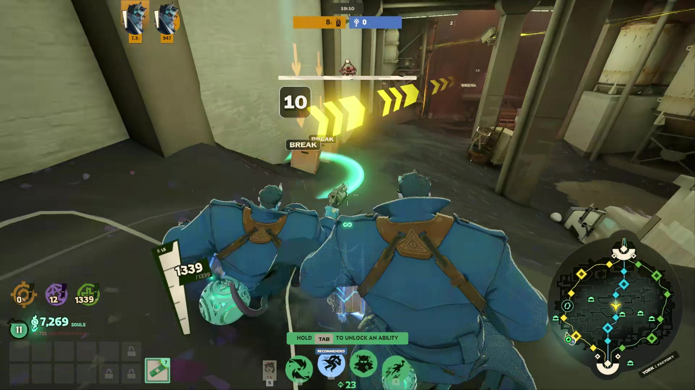
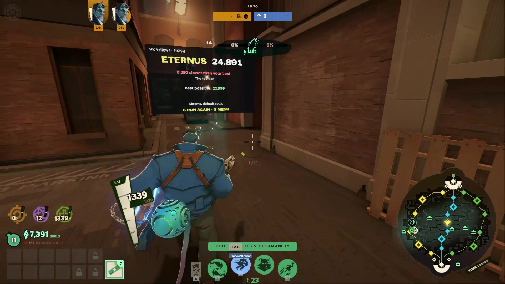
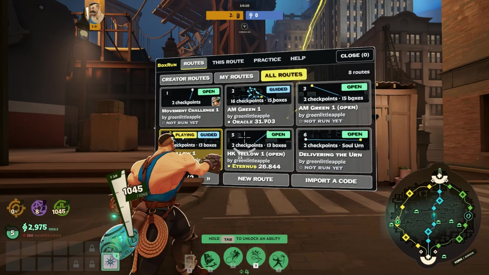
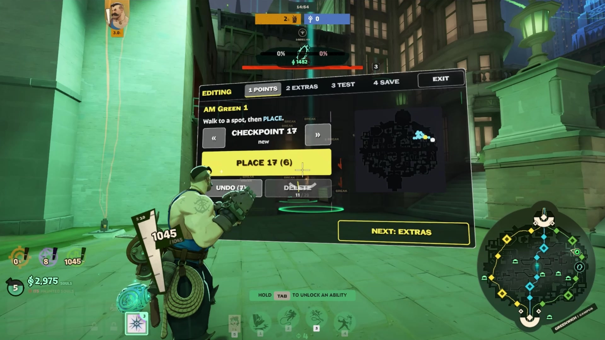
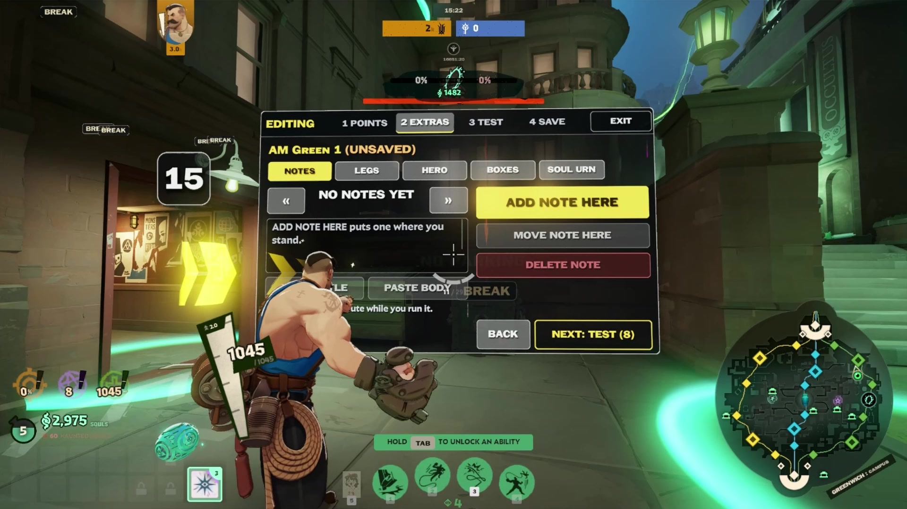
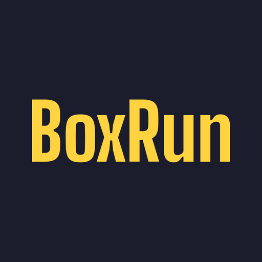

BoxRun press kit
BoxRun is a free mod for Deadlock that adds a route editor to the game. Players place checkpoints anywhere on the Midtown map, run the route against a clock and an animated ghost of the best run, and share it as a short code (like BR-882EMZ) that anyone can import and race. Routes can mark boxes that must be broken, carry notes, split into legs, and start with the Soul Urn. BoxRun is its own map that the player loads, so normal matches aren't touched. It was released on GameBanana on 28 October 2026 by Marcus (greenlittleapple).
Everything on this page may be used in videos, articles and posts about BoxRun.
Facts
- Game
- Deadlock (Valve)
- Made by
- Marcus (greenlittleapple)
- Released
- 28 October 2026, on GameBanana
- Price
- Free
- Download
- 3 MB zip, one 42 MB addon file once installed
- Download page
- gamebanana.com/mods/733166
- Discord
- discord.gg/kMaQcMWdsA
- Website
- boxrun.gg
- Contact
- contact@boxrun.gg
Clip
On YouTube: youtube.com/watch?v=_umRSrqrFrg
Screenshots
1920 x 1080 JPG. Click one for the full-size file.










Wordmark

512 x 512 PNG. Download